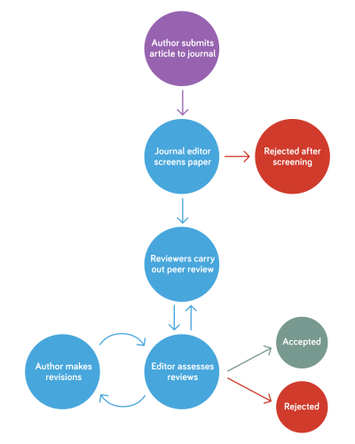

Academic writing
Academic publication process
Submitting a manuscript for publication is a lot like submitting an essay or taking a test. To succeed, you need to understand what the “test” will cover, who the judges are, and the rubrics they use to evaluate you. Journals have their own criteria, and editors act as the first judges of your work. If you write with these in mind, you’re much more likely to succeed.

Submission
The manuscript is submitted by the corresponding author and typically includes:
- Manuscript (of course)
- Cover letter
- Seperate files for figures and/or tables
- Reporting checklist (STROBE, CONSORT, PRISMA…)
Preliminary editorial screening
An editor reviews the title, abstract and cover letter to assess the paper. If the manuscript passes this stage, it proceeds to peer review.
What is the editor looking for?
- Fit with the journal’s scope and standards.
- Potential impact, including likelihood of being cited.
Like conducting a systematic review: just as you screen titles and abstracts to decide if a study fits your review question, editors quickly assess whether your manuscript fits their journal’s criteria. Their decision is swift, since they have many submissions to evaluate and limited time.
In marketing, there’s a “7-second rule” for making a first impression: consumers decide whether they want to buy a product within 7 seconds (Zhuoma, Kasamatsu, and Ainoya 2020). Editors often work just as quickly. Your title, abstract, and cover letter are your first and best chance to capture their attention. Make sure they clearly convey what your research is about, why it matters, and why it belongs in their journal.
What does “potential impact” mean to an editor?
Editors are not just looking for good science. They’re looking for papers that contribute meaningfully to their journal’s mission and audience. While every journal has its specific focus, they generally want research that:
- Addresses pressing questions in the field.
- Has the potential to advance knowledge or significantly influence the direction of the field.
- Is likely to be cited by other researchers, as citations indicate relevance and influence.
Why does this matter? Journals aim to publish research that resonates in their field and enhances their reputation. Metrics like the impact factor, which reflects how often articles in the journal are cited, are used as benchmarks for success. While this isn’t the sole driver for what editors accept, it’s fair to say they’re drawn to work that aligns with these goals.
Framing it for authors
For authors, this means thinking strategically:
- Focus your manuscript’s message: Highlight what’s novel or significant about your findings.
- Target the right journal: Research its audience and scope, because editors want papers that “fit”.
- Write for clarity: Clear, accessible writing helps both the editor and readers see the potential impact of your work.
By understanding this perspective, you can position your manuscript not just as a contribution to science, but also as a meaningful addition to a journal’s growing conversation.
Peer review
The editor will typically invite 3 reviewers. Reviewers evaluate your manuscript and submit reports back to the editor with recommendations.
What are reviewers looking for?
- Clarity: Is it well-structured and understandable?
- Originality: Is the research novel and valuable?
- Methodology: Are methods robust, reproducible, and clear?
- Validity: Do results support the conclusions?
- Impact: Does this work advance knowledge in the field?
Reviewers give recommendations such as:
- Acceptance without changes: rare and exceptional
- Acceptance with revisions: minor or major changes needed
- Rejection
Think of reviewers as your essay graders. They’re checking if you’ve followed the “rubrics” of good science and clear writing.
Editorial decision
It’s a common misconception that reviewers decide the fate of your manuscript. In reality, reviewers act more like consultants who provide insights and recommendations to support the editor. Ultimately, the editor has the final say on whether your manuscript is accepted, revised, or rejected.
The editor considers reviewers’ reports and decides:
- Acceptance without changes: rare and exceptional
- Conditional acceptance with revisions:
- Minor revisions: authors revise, editor verifies the changes
- Major revisions: authors submit a revised manuscript and detailed responses to reviewers, another round of peer review is likely to occur
- Rejection: when the majority of reviewers recommend rejection
What makes a manuscript?
Read and analyse a paper
Paper: Long-term waning of vaccine-induced immunity to measles in England: a mathematical modelling study (Robert, Suffel, and Kucharski 2024).
Answer the questions:
- What are the authors trying to prove?
- What are the key outputs of the study?
- How did they conduct the study?
- Where did you find the information to answer the above questions?
Reflect as a group on the following:
- Which section was most helpful in understanding the paper?
- Which section did you struggle with, and why?
Manuscript structure
- Introduction: context, the gap in knowledge, and study objectives
- Methods: how experiments were done
- Results: key outputs in figures and tables
- Discussion: interpretation of findings, limitations, and broader implications
Writing strategies
What sections should you write first?
The order of writing is often different from the order of presentation in the manuscript. Following a logical workflow can streamline the process and improve the coherence of your manuscript.
My strategy
- Study objectives:
- Start here to clarify the central goals of your research. This will guide the entire manuscript. Focus on clear, compelling wording that immediately make people understand what are you doing.
- Figures and/or tables:
- The first thing you should do is NOT WRITING. First, create one to four publication-quality plots or tables and show them to someone you trust. Make sure they truly “get” your story before you move on (Leek 2016).
- Write up a story around the plots in the simplest language you feel you can get away with.
- This is how you build up a story: think of them as a step-by-step narrative framework that guides readers through your study’s logic:
- Each figure or table should illustrate a key point
- Write concise, informative captions that highlight their meaning
- Results:
- Summarise the findings shown in your figures and tables in words, ensuring a consistent and logical progression from one key insight to the next.
- Methods:
- Basically what have been done to produce results. By this stage, you know exactly what methods need to be highlighted to support your results.
- Discussion:
- Interpret your findings in the context of existing research.
- Limitations and suggest implications or future directions.
- Introduction:
- Set the context, highlight the research gap, and end with your objectives.
- Abstract
- Title
Drafting
A typical workflow
- Turn on “Do not disturb”.
- Note down everything that comes to mind, not in complete sentences.
- Don’t care about grammar, punctuation, references.
Once you’ve got a rough “mess” of words, start organising them into coherent sentences, trimming unnecessary parts as you go. Think of it as shaping raw clay into a polished form.
Verbosity
Visit this link and do the exercise.
How to avoid being overly verbose
- Delete meaningless or redundant words: Words that add no value should go.
- Beware of repetition: Avoid restating the same idea in different ways.
- Delete implied words: Remove words that are already conveyed by other parts of the sentence.
- Use affirmations instead of negatives: For example, say “effective” instead of “not ineffective”.
- Cut unnecessary adjectives and adverbs: Only keep modifiers that add genuine clarity.
- Avoid “burying the verb”: Keep your main verb clear and upfront.
- Use the active voice: Active constructions are clearer and more engaging.
Let start writing!
Study objectives
Begin by identifying the most important findings you want to highlight in your manuscript. These will form the core message of your study.
- Review recent papers: Prioritise the most recent and relevant studies in your field. Read them carefully to identify the research gaps they haven’t yet addressed.
- Find your “selling point”: Focus on how your data or findings can fill these gaps. This will not only guide your writing but also make your study more compelling to editors and reviewers.
This process is similar to conducting a quick literature review. It helps clarify your study’s objectives and provides valuable content for crafting the introduction and discussion sections later.
Figures and/or tables
Start with your key findings:
- Decide which results are central to your message and need visual representation.
- Think about whether a graph, chart, or table best conveys the information.
Choose the right type of visual:
- Figures: Use for trends, relationships, and comparisons (e.g., bar charts, line graphs, scatter plots).
- Tables: Use for detailed numerical data or when precise values matter.
Design for simplicity:
- Keep visuals clear and uncluttered. Avoid overloading them with excessive data or details.
- Use concise titles, clear labels, and consistent formatting.
Show them to someone you trust, discuss and build a storyline: next meeting.
Keywords
SEO